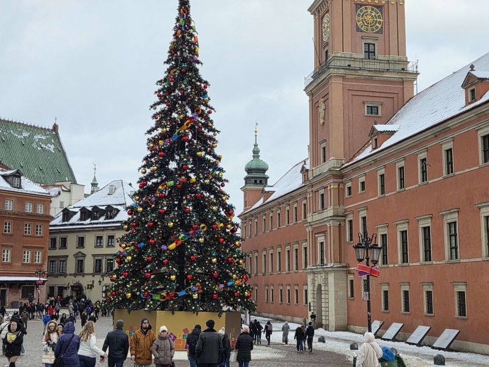
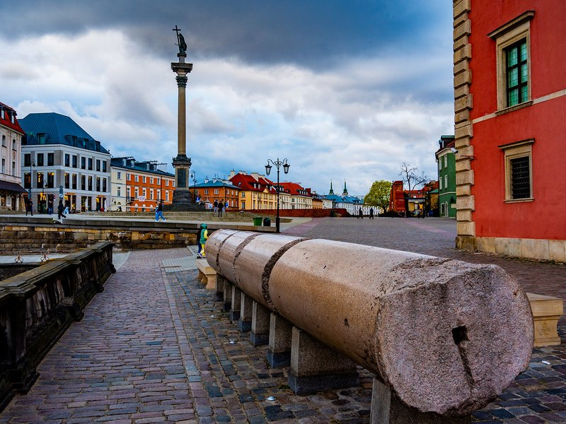
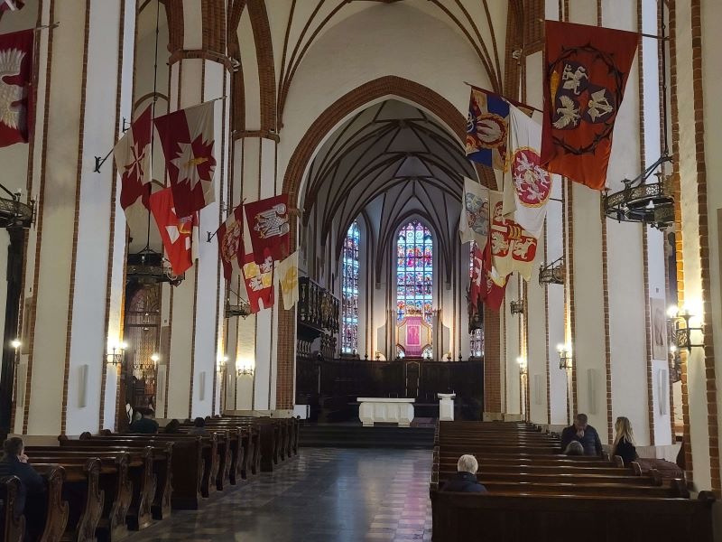
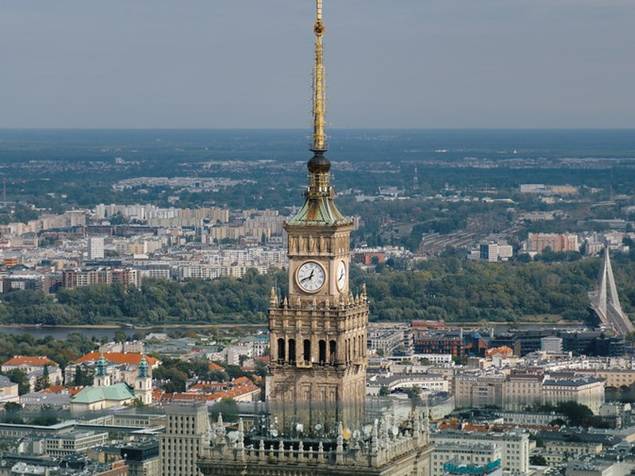
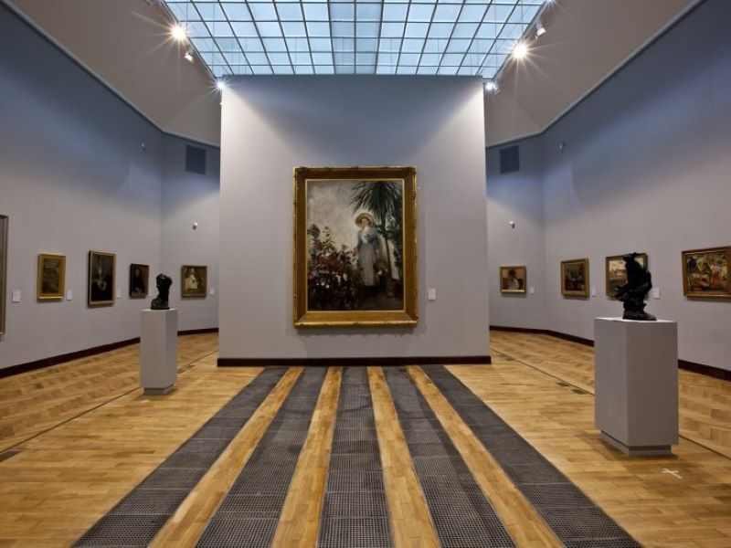
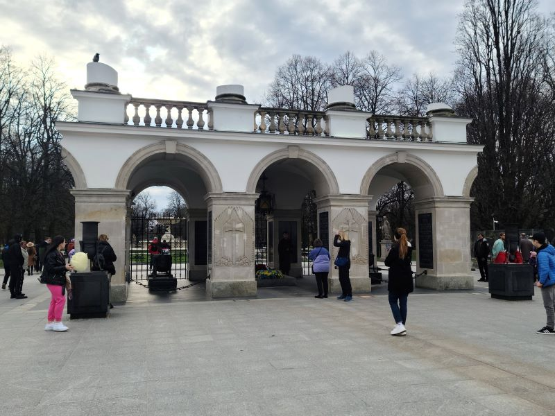
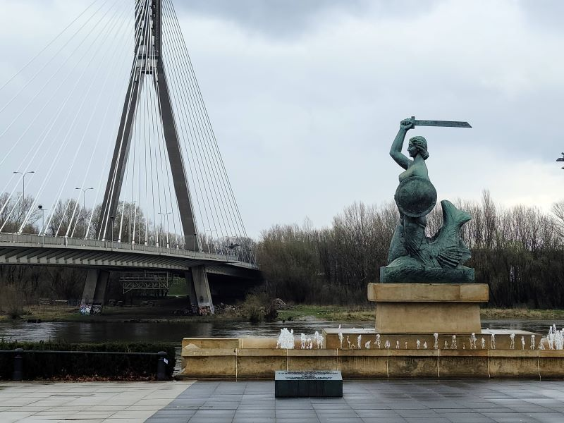
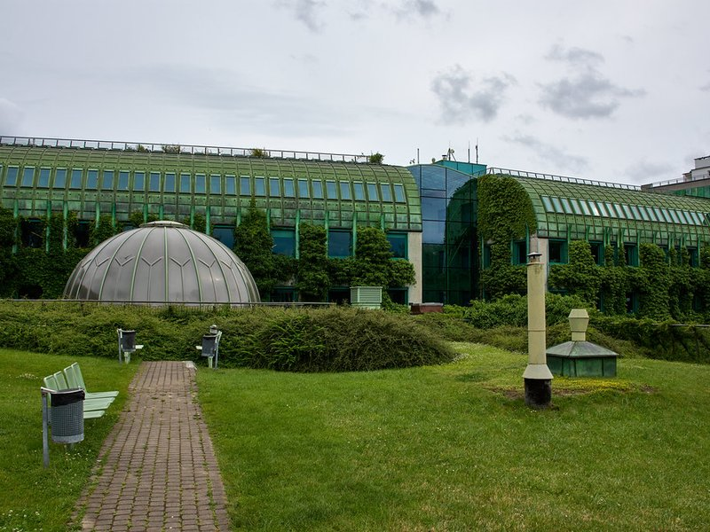
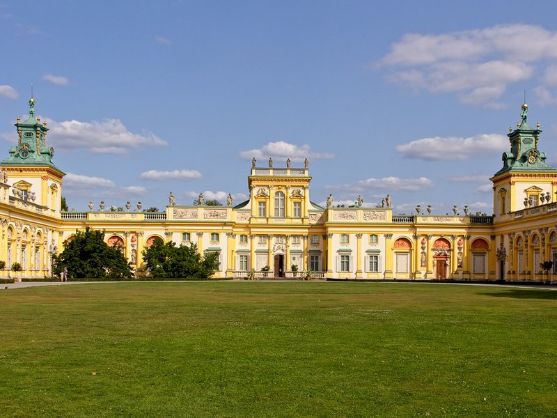

Explore Warsaw
A Brief History
Warsaw became the capital of Poland in 1596 and expanded along the Vistula River. The royal castle and old town were largely destroyed in 1944 after the Warsaw Uprising. Postwar reconstruction followed historic documents and paintings, an effort UNESCO recognized when inscribing the rebuilt old town in 1980. Praga district across the river retains 19th-century buildings. The city is Poland's political and economic center.
Attractions Map
Top Sights & Activities

The Royal Castle in Warsaw
The Royal Castle in Warsaw is a state museum and a national historical monument, which formerly served as the official royal residence of several Polish monarchs. The personal offices of the king and the administrative offices of the royal court were located in the Castle from the 16th century until the final partition of Poland in 1795. Situated in the Castle Square, at the entrance to the Old Town, the Royal Castle holds a significant collection of Polish and European art.

Sigismund's Column
Sigismund's Column, originally erected in 1644, is located at Castle Square, Warsaw, Poland and is one of Warsaw's most famous landmarks as well as the first secular monument in the form of a column in modern history. The column and statue commemorate King Sigismund III Vasa, who in 1596 had moved Poland's capital from Kraków to Warsaw. It is part of the Historic Centre of Warsaw, which was designated a UNESCO World Heritage Site on September 1-5, 1980.

Archcathedral Basilica of St. John the Baptist
St John's Archcathedral is a Catholic church within the Old Town precinct in Warsaw, Poland. The Brick Gothic structure stands on Świętojańska Street, adjacent to the Jesuit Church. St John's is one of three major cathedrals in the city, but it is the only temple that also possesses the title of an archcathedral.

Palace of Culture and Science
The Palace of Culture and Science is a notable high-rise building in central Warsaw, Poland. With a total height of 237 metres, it is the second tallest building in both Warsaw and Poland, the eighth tallest building in the European Union and one of the tallest on the European continent.

National Museum in Warsaw
The National Museum in Warsaw is a national museum in Warsaw, one of the largest museums in Poland and the largest in the capital. It comprises a collection of ancient art, counting about 11,000 objects, an extensive gallery of Polish painting since the 16th century and a collection of foreign painting including Italian, French, Flemish, Dutch, German and Russian works.

Tomb of the Unknown Soldier
The Tomb of the Unknown Soldier is a monument in Warsaw, Poland, dedicated to the unknown soldiers who have given their lives for Poland. It is one of many such national tombs of unknowns that were erected after World War I, and the most important such monument in Poland. The monument, located at Piłsudski Square, is the only surviving part of the Saxon Palace that occupied the spot until World War II.

Mermaid's Statue
A iconic, beloved bronze monument fiercely protecting the Old Town Square. As the legendary symbol and historic coat of arms of the city, she powerfully represents Warsaw's enduring fighting spirit and remarkable resilience.

Warsaw University Library Garden
The University of Warsaw Library is a library of the University of Warsaw, Poland. Established in 1816 following the formation of the Royal Warsaw University, it was led by the first director Samuel Linde, a linguist and educator. By 1831, the library housed over 134,000 volumes.

Museum of King Jan III's Palace at Wilanów
Wilanów Palace is a former royal palace located in the Wilanów district of Warsaw, Poland. It was built between 1677 and 1696 for the King of Poland and Grand Duke of Lithuania John III Sobieski according to a design by architect Augustyn Wincenty Locci. Wilanów Palace survived Poland's partitions and both World Wars, and so serves as one of the most remarkable examples of Baroque architecture in the country.